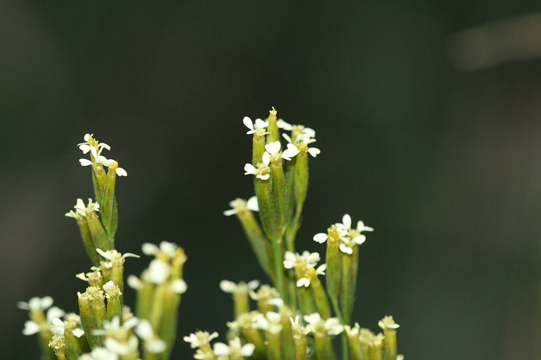

वाइल्ड मैरीगोल्डWild Marigold
Tagetes minuta · Asteraceae · FLR-0424

- Scientific name वैज्ञानिक नाम
- Tagetes minuta L.
- Family कुल
- Asteraceae
- Hindi हिंदी
- वाइल्ड मैरीगोल्ड
- Local names स्थानीय नाम
- wild marigold, southern marigold, stinking roger
- Status here यहाँ की स्थिति
- naturalized
- Movement आवागमन
- Resident, here all year
- Known from कहाँ दर्ज
- Others have published records from the Basti–Ayodhya districts बस्ती–अयोध्या के ज़िलों से दूसरों के प्रकाशित अभिलेख
- IUCN IUCN
- not evaluated
- Review समीक्षा
- not yet reviewed
When to look कब देखें
Present all year. साल भर मौजूद।
Tell it apart from इनसे अलग पहचानें
वाइल्ड मैरीगोल्ड / Wild Marigold
Tagetes minuta L. — Asteraceae
वाइल्ड मैरीगोल्ड — यह दक्षिण अमेरिका से आकर हमारे देश में प्राकृतिक रूप से फैलने वाला एक तीखी गंध वाला खरपतवार है। इसके पौधे बरसात के बाद सड़कों के किनारे, परती खेतों और बंजर जमीन पर तेजी से उगते हैं। इसकी पत्तियां कटी-फटी और बारीक होती हैं, जिन्हें मसलने पर बहुत तेज तीखी खुशबू आती है। इसके सिर पर छोटे-छोटे हल्के पीले या हरे-पीले फूलों के गुच्छे लगते हैं।
Quick Identification त्वरित पहचान
| Feature | Description |
|---|---|
| Habit | Tall, erect, strong-scented annual herb with grooved, ribbed stems |
| Scent | Strongly aromatic with an intense pungent, citrusy-terpene scent when crushed |
| Leaves | Pinnately divided into narrow lanceolate segments with sharply serrate margins |
| Glands | Foliage bearing prominent translucent orange-yellow oil glands beneath |
| Capitula | Narrow, cylindric, small, crowded in dense terminal flat-topped corymbs |
| Florets | Ray florets few, pale yellow to cream-white; disc florets small, tubular, yellow |
Field tip: Look along sunlit road verges and village wastelands. The upright grooved stems with finely feathery pinnate leaves that release an overpowering pungent aroma when brushed against distinguish it immediately from garden marigolds.
हिंदी: इसके पौधे काफी ऊंचे और खड़े होते हैं। पत्तियों को छूने पर बहुत तीखी गंध आती है और शाखाओं के सिरों पर छोटे पीले फूलों के पतले गुच्छे लगते हैं।
Morphology आकारिकी
| Characteristic | Description |
|---|---|
| Growth-form | Erect, branched, strongly aromatic herbaceous annual |
| Stem | Stiff, green to purplish, distinctly grooved and ribbed, glabrous |
| Foliage | Opposite below, alternate above, deeply pinnately dissected into linear leaflets |
| Margin | Finely and sharply serrate, dotted with conspicuous dark oil glands |
| Inflorescence | Compact corymbose clusters of numerous slender, cylindrical capitula |
| Involucre | Tubular involucre formed of connate phyllaries with rounded teeth |
| Achene & Pappus | Linear black achenes topped by unequal stiff scarious scales and awns |
A tall, upright, highly aromatic annual herb with strong fibrous roots and grooved glabrous stems. The leaves are pinnately divided into narrow, sharply serrated segments that bear prominent aromatic oil glands along their margins.
The capitula are narrow, cylindric, and held in dense terminal clusters. Unlike cultivated marigolds, the flower heads are small, each containing only a few tiny pale yellow ray florets and central yellow disc florets. The achenes are linear, ribbed, and capped by stiff scaly pappus scales.
हिंदी: इसका तना सीधा और धारियों वाला होता है। पत्तियां बारीक कटी हुई होती हैं जिन पर तेल की ग्रंथियां पाई जाती हैं। इसके फूल छोटे और पतले बेलनाकार गुच्छों में आते हैं।
Behaviour & Ecology व्यवहार और पारिस्थितिकी
Wild marigold is an opportunistic, fast-growing ruderal weed adapted to open, highly disturbed habitats with full sun exposure. It readily colonizes degraded soils, railroad sidings, overgrazed pastures, and newly cleared agricultural borders.
The plant produces diverse volatile secondary metabolites, including monoterpenes and thiophenes, which function as potent allelopathic agents that inhibit the germination of competing weed seeds in surrounding topsoil. Its intense essential oils act as chemical deterrents against generalist insect herbivores and grazing livestock.
हिंदी: यह पौधा खुली धूप और खराब जमीन पर बहुत तेजी से फैलता है। इसकी जड़ों और पत्तियों से निकलने वाले रसायन आसपास अन्य खरपतवारों को उगने से रोकते हैं।
Life Cycle / Phenology जीवन चक्र
Seeds germinate following rains, taking advantage of damp, warm disturbed soil. Vegetative elongation is exceptionally rapid, with grooved stems shooting upwards.
The crowded cylindrical capitula produce small yellow florets visited by small flies, bees, and butterflies that facilitate cross-pollination. Linear ribbed achenes mature bearing stiff pappus scales, dispersing via wind and physical disturbance before the annual plant completes its cycle and dies.
हिंदी: नमी मिलने पर इसके बीज अंकुरित होते हैं और पौधा तेजी से बढ़ता है। इसके छोटे पीले फूलों से परागण के बाद पतले बीज बनते हैं जो हवा और जानवरों से बिखरते हैं, जिसके बाद पौधा सूख जाता है।
Associated Species / Interactions सहजीवी प्रजातियाँ
Frequently grows in disturbed ruderal communities alongside गेंदा (Tagetes erecta), धतूरा (Datura metel), and common wasteland weeds such as Parthenium hysterophorus and Bidens pilosa.
The small nectariferous disc florets are visited by generalist syrphid flies, small solitary bees, and pierid butterflies. Furthermore, root exudates from wild marigold have been documented to suppress parasitic root-knot nematodes in agricultural soils.
हिंदी: यह बंजर जमीन पर गाजरघास और धतूरा जैसे खरपतवारों के साथ उगता है। इसकी जड़ें मिट्टी में हानिकारक कीटों और सूत्रकृमियों को नष्ट करने में मदद करती हैं।
Pests and Diseases कीट और रोग
Owing to its high concentration of insecticidal and repellent terpenes, wild marigold suffers remarkably little insect herbivory under field conditions.
However, during prolonged humid spells, the dense foliage can succumb to powdery mildew (Golovinomyces cichoracearum) or Alternaria leaf blight, leading to premature yellowing and leaf drop. Root rot occasionally develops in waterlogged clay hollows.
हिंदी: तेज गंध और कड़वाहट के कारण कीड़े-मकोड़े इस पौधे से दूर रहते हैं। अधिक नमी में इसके पत्तों पर सफेद फफूंद का असर हो सकता है।
Agricultural / Human Relevance कृषि प्रासंगिकता
Duthie (1905, p. 496) described only the cultivated Mexican ornamental marigolds Tagetes erecta and Tagetes patula grown in gardens under the vernacular name genda. Tagetes minuta is an introduced, naturalized weed of roadsides and waste places, with no medicinal use recorded in regional floras.
हिंदी: दुथी (1905, पृ. 496) ने केवल बगीचों में उगाए जाने वाले गेंदा (Tagetes erecta) और T. patula का उल्लेख किया था। Tagetes minuta एक प्राकृतिक रूप से स्थापित खरपतवार है।
Expected Locally स्थानीय रूप से अपेक्षित
Not a field record. Written from published accounts for eastern Uttar Pradesh. No confirmed local sighting yet — if you have seen it, that is what the atlas needs.
अभी तक स्थानीय पुष्टि नहीं। यह विवरण प्रकाशित स्रोतों से है, किसी अवलोकन से नहीं।
GBIF holds published records from these districts.
GBIF holds records from the districts of eastern Uttar Pradesh, where the weed has established along roadside corridors and peri-urban wastelands. In Basti, Ayodhya, and Sant Kabir Nagar, searchers should examine sunny waste ground and field bunds. A photograph showing the slender flower heads, dissected gland-dotted leaves, and overall habit with GPS coordinates would confirm local presence.
हिंदी: पूर्वी उत्तर प्रदेश के इन जिलों से इसके प्रकाशित रिकॉर्ड उपलब्ध हैं। सड़कों और खाली खेतों में इसके पौधे आसानी से देखे जा सकते हैं।
Distribution वितरण
Native to the temperate grasslands and montane valleys of South America, including Argentina, Bolivia, Chile, and Paraguay. It has become naturalized across Africa, Europe, Asia, Australia, and North America as an aggressive colonizing weed.
In India, it is widespread along the sub-Himalayan valleys of Himachal Pradesh, Uttarakhand, and Punjab, and has expanded steadily into the plains of Uttar Pradesh and Bihar along transport corridors.
हिंदी: मूल रूप से दक्षिण अमेरिका का यह पौधा आज दुनिया भर में फैल चुका है। भारत में यह हिमालय की तलहटी से लेकर उत्तर प्रदेश के मैदानी इलाकों तक फैला हुआ है।
Research Questions शोध प्रश्न
- To what extent do root exudates of naturalized Tagetes minuta suppress root-knot nematode populations in eastern Uttar Pradesh vegetable farms?
- Does wild marigold outcompete native ruderal flora along roadside corridors in the Awadh plain?
- क्या स्थानीय किसान इसके पत्तों का अर्क बनाकर जैविक कीटनाशक के रूप में उपयोग कर सकते हैं?
- How do seasonal rainfall fluctuations influence the density of wild marigold emergence along fallow field edges?
- क्या इसके आवश्यक तेल का व्यावसायिक उत्पादन इस क्षेत्र में किसानों के लिए लाभकारी हो सकता है?
हिंदी: क्या इस पौधे के रस का उपयोग खेतों में कीटों को प्राकृतिक रूप से भगाने के लिए किया जा सकता है, इस पर अध्ययन होना चाहिए।
Similar Species मिलती-जुलती प्रजातियाँ
| Species | Key Differences | Habitat / Occurrence | |
|---|---|---|---|
| [[marigold | गेंदा (Tagetes erecta)]] | Much larger solitary yellow or orange flower heads; widely cultivated; broader leaflets | Grown widely as a floral crop and garden ornamental |
| Tagetes patula (French Marigold) | Smaller bushy ornamental; flowers variegated yellow and dark reddish-brown | Cultivated in flower beds and home gardens across the plains | |
| Bidens pilosa (Spanish Needles) | Capitula with white ray florets; achenes with barbed awns; scentless foliage | Waste places, field margins, and shaded ditch banks | |
| [[datura | धतूरा (Datura metel)]] | Coarse sprawling shrub with large white funnel-shaped solitary flowers; spiny capsule | Waste ground, village margins, and temple precincts |
Field rule: A tall, grooved wasteland weed with finely pinnate gland-dotted leaves releasing an intense pungent citrus-terpene aroma and dense clusters of narrow cylindric yellow heads is Tagetes minuta.
हिंदी: असली गेंदा (Tagetes erecta) के फूल बड़े और गोल होते हैं, जबकि वाइल्ड मैरीगोल्ड के फूल छोटे, पतले और गुच्छों में खिलते हैं।
Taxonomy & Classification वर्गीकरण
Original description. Named by Carl Linnaeus in 1753 in Species Plantarum, volume 2, page 887 (Tagetes minuta L.). The specific epithet minuta refers to the small size of the individual capitula compared to other members of the genus.
Subspecies. Monotypic; no valid subspecies are recognized, though minor ecological variants occur across its naturalized global range.
Family and order placement. Placed in the composite family Asteraceae, subfamily Asteroideae, tribe Tageteae, and order Asterales.
IUCN status rationale. Not Evaluated (NE) on the IUCN Red List due to its introduced, naturalized status and widespread global abundance across disturbed ecosystems.
हिंदी: लीनियस ने 1753 में इसका वर्णन किया था। छोटे फूलों के कारण इसे 'मिनुटा' नाम दिया गया। यह एस्टरेसी कुल का पौधा है और आईयूसीएन द्वारा मूल्यांकित नहीं है।
Photo Gallery फोटो गैलरी
No photos yet. (Contributions welcome!)
References संदर्भ
- Linnaeus, C. (1753). Species Plantarum, Tomus II. Impensis Laurentii Salvii, Holmiae, p. 887.
- Duthie, J. F. (1905). Flora of the Upper Gangetic Plain, and of the Adjacent Siwalik and Sub-Himalayan Tracts, Vol. 1, Part 2. Superintendent of Government Printing, Calcutta, p. 496.
- Soule, J. A. (1993). Infrageneric Systematics of Tagetes. Ph.D. dissertation, University of Texas at Austin.
- Plants of the World Online (POWO) (2026). Tagetes minuta L. Facilitated by the Royal Botanic Gardens, Kew.
- GBIF Secretariat (2026). Tagetes minuta L. GBIF Backbone Taxonomy. Checklist dataset https://doi.org/10.15468/39omei.
Source file: species/flora/weeds/wild_marigold.md